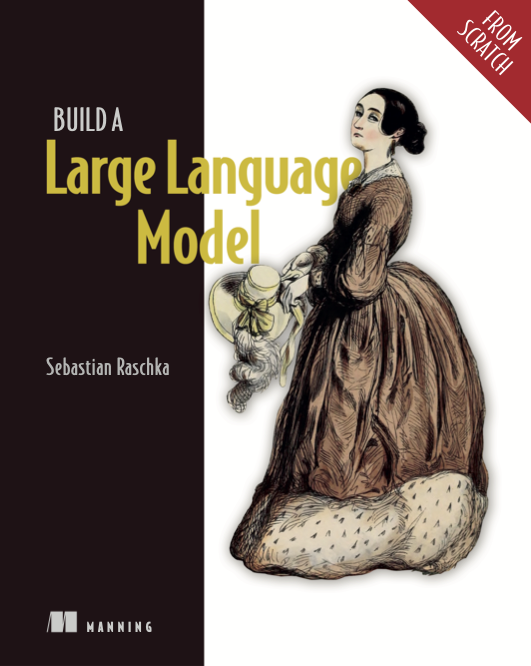

Transformers
The Building Blocks
of Large Language Models (LLMs)
Heba El-Shimy

Raschka, S. (2025) Build a large language model (from scratch) [First edition].
Available on HWU Discovery: discovery.hw.ac.uk
Last Lecture:
Text Processing & RNNs- Deep learning models cannot process raw text directly
- We need a way to convert text into a format that neural networks can process (numeric)
- Embedding: is the process of representing discrete textual data into points in a continuous vector space

Source: Raschka, S. (2025). Build a large language model (from scratch) [First edition].
LLMs
An LLM is a deep neural network designed to understand, generate, and respond to human-like text. These models are trained on massive amounts of text data, sometimes encompassing large portions of the entire available text on the internet.

Source: Raschka, S. (2025). Build a large language model (from scratch) [First edition].
Transformers
The Building Blocks of LLMsA typical transformer consists of two main components:
- Encoder: processes the input text; encoding it into a series of vectors capturing the contextual information of the input
- Decoder: takes the encoded vectors and generates the output text
In each, the encoder and the decoder, there exists multiple transformer "blocks"; each block consisting of one self-attention and one feed forward (MLP) layer


Click to flip the card for detailed architecture
Sources: 1. Claude AI.
2. Vaswani, A., Shazeer, N., Parmar, N., Uszkoreit, J., Jones, L., Gomez, A.N., Kaiser, Ł. and Polosukhin, I., 2017. Attention is all you need. Advances in neural information processing systems, 30.
Transformers
Different Flavors

Source: Raschka, S. (2025). Build a large language model (from scratch) [First edition].